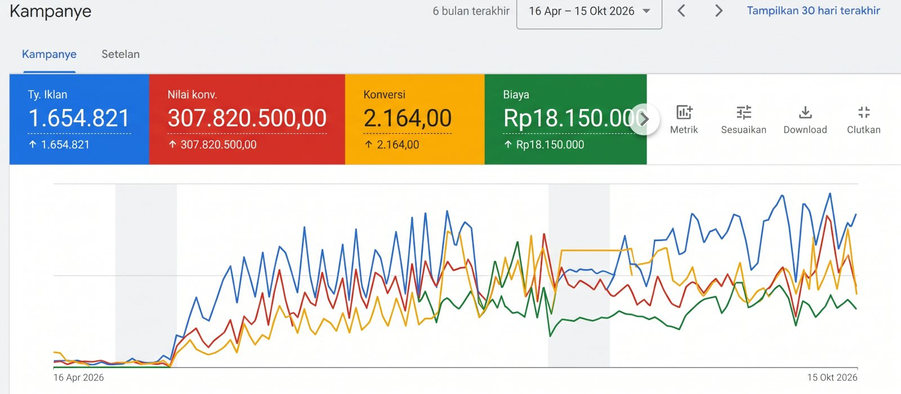
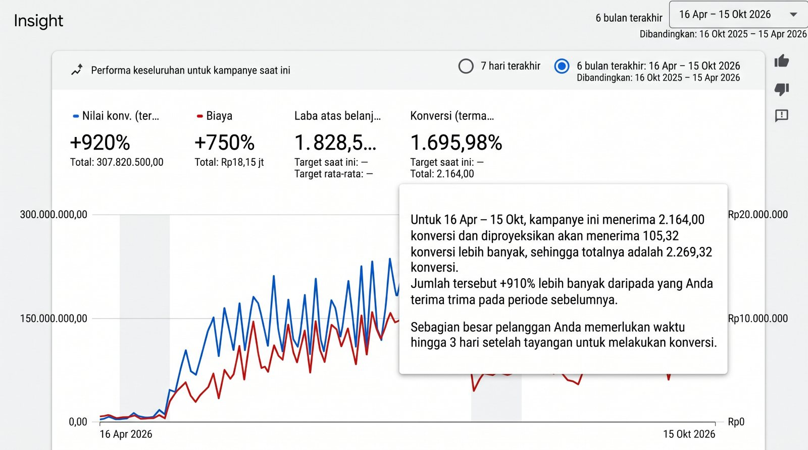

Branding & kreatif
Bangun tampilan brand yang konsisten dan mudah diingat.
- Identitas visual
- Materi konten
- Arah komunikasi brand
Partner digital untuk UMKM · Surabaya
Brand yang kuat, konten yang terasa dekat, dan pemasaran digital yang punya arah. Kami bantu bisnis Surabaya tampil lebih meyakinkan.
Bisnis yang baik layak dikenal lebih banyak orang. Kami bantu menyusun cara agar calon pelanggan lebih mudah menemukan dan memahami nilai usaha Anda.
Yang bisa kami bantu
Mulai dari membangun identitas sampai menjalankan kampanye. Pilih kebutuhan yang paling sesuai dengan bisnis Anda.
Bangun tampilan brand yang konsisten dan mudah diingat.
Siapkan materi promosi yang menarik perhatian calon pelanggan.
Jangkau calon pelanggan lewat kanal yang cocok untuk tujuan bisnis.
Investasi yang transparan
Setiap penawaran merinci layanan, jumlah konten, kanal, dan durasi sebelum pekerjaan dimulai.
Pembuatan akun dari nol bila dibutuhkan, perencanaan konten, serta produksi dan unggah satu Reels atau video pendek setiap hari ke kanal yang disepakati.
Rekomendasi 6 bulan: Rp10.000.000 total, hemat Rp2.000.000 dibanding tarif bulanan.
Pembuatan website satu kali dalam lingkup paket, produksi konten, laporan data bulanan, pembuatan dan pengelolaan kampanye Google Ads, SEO, pengelolaan media sosial, serta balasan komentar. Lingkup kanal dan pekerjaan disepakati sebelum mulai.
Desain dan pembuatan website, lalu hasil diserahkan kepada klien. Termasuk maksimal 10 revisi; setiap perubahan terpisah dihitung satu revisi. Biaya domain tidak termasuk; kebutuhan hosting dicantumkan terpisah dalam penawaran.
Jika tidak ingin melanjutkan paket, konfirmasi paling lambat satu bulan sebelum periode paket berakhir.
Contoh proyek
Surabaya · Retail SPH · Service Phonecell Hub
SPH · Service Phonecell Hub
Pengalaman kerja · SPH Service Phonecell Hub
SPH mulai menjual alat servis ponsel melalui e-commerce pada 2020, lalu membuka toko offline di WTC Surabaya pada 2025.
Pada awal 2025, konten sudah rutin terbit tetapi belum berangkat dari kebutuhan teknisi. Foto dengan musik dan ulasan yang lebih menonjolkan efek editing belum banyak menjelaskan manfaat produk.
Saya bergabung pada Maret 2026 sebagai karyawan content creator dan digital marketer. Hingga mengakhiri masa kerja pada Oktober 2026, saya menangani konten Instagram, TikTok, Facebook, dan YouTube, Google Ads yang mulai berjalan pada April, kampanye, SEO, serta pembuatan website SPH. Pengalaman ini menjadi salah satu dasar saya membangun Josjis Management.
Arah konten bergeser ke demo alat, tips teknis, ulasan yang menjawab kebutuhan teknisi, dan materi promosi. Laporan di bawah menunjukkan hasil organik media sosial serta data kampanye berbayar secara terpisah.


Google Ads · Performa kampanye
Kampanye dimulai April 2026 · laporan 16 Apr–15 Okt 2026 dibandingkan 16 Okt 2025–15 Apr 2026
Google Ads memproyeksikan 105,32 konversi tambahan. Sebagian besar konversi tercatat hingga tiga hari setelah tayangan.
Nilai konversi mengikuti pengaturan pelacakan Google Ads dan tidak otomatis sama dengan omzet atau laba aktual.
Hasil kerja · Website
Website merangkum informasi toko, produk, lokasi WTC Surabaya, dan jalur kontak agar teknisi lebih mudah mengenal SPH dan menghubungi timnya.
Kunjungi website SPHLangkah yang jelas
Tidak perlu paham istilah pemasaran. Ceritakan saja kondisi bisnis Anda, kami bantu petakan langkah berikutnya.
Ceritakan usaha, pelanggan, dan hal yang ingin dicapai.
Kami diskusikan layanan dan langkah yang paling relevan.
Mulai pekerjaan dengan arah dan komunikasi yang disepakati.
Lihat perkembangan, lalu tentukan langkah selanjutnya.
Ekspektasi yang realistis
Rentang berikut adalah panduan perencanaan, bukan janji hasil. Waktu dapat berbeda menurut niche, kesiapan produk, anggaran, dan konsistensi kerja.
Untuk menguji, membaca data, dan mengoptimalkan kampanye secara bertahap.
Untuk membangun konten yang konsisten, relevan, dan mendukung leads serta konversi.
Cara kerja yang transparan
Kanal, jumlah output, durasi, revisi, dan biaya disepakati sebelum pekerjaan dimulai.
Klien mengisi saldo langsung ke akun Google Ads sendiri; saldo tidak masuk ke biaya jasa agency.
Paket ekosistem mencakup laporan data setiap bulan agar progres dapat ditinjau bersama.
Pada paket pembuatan website saja, hasil diserahkan kepada klien. Maintenance bersifat opsional.
Ada yang ingin ditanyakan?
Diskusikan target dan kebutuhan bisnis Anda. Admin akan membantu menyusun lingkup kerja dan penawaran yang sesuai.
Melayani Surabaya Barat dan sekitarnya: Wiyung, Lidah Kulon, Jeruk, PTC, hingga Driyorejo.